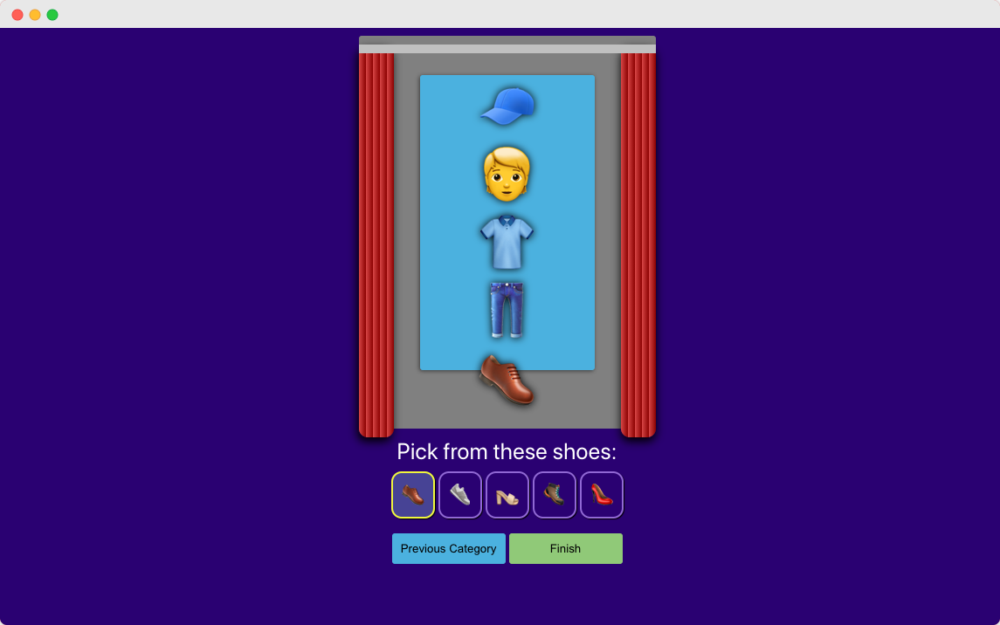
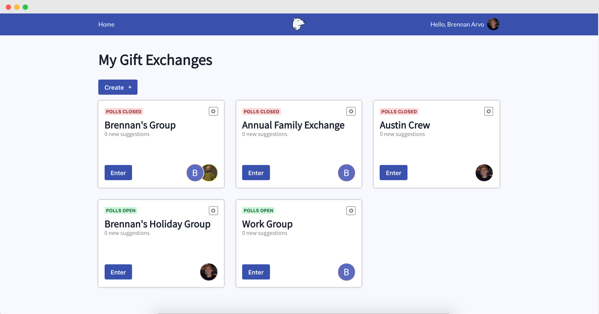

Projects
These are the side projects I've fully committed to finishing and/or completing. I create a project if it will help me learn something new or if it solves an immeidate problem. You can visit my Github for source code.
MeMoji
MeMoji is an application that allows a user to curate an emoji from head to toe. I built this to familiarize myself with TypeScript in a React JS application.
Tech Stack/Technologies:
- React JS
- TypeScript
- Raw CSS
The North Poll
This is on in-progress application that is a twist on a Secret Santa gift exchange. As a participant of many of these gift exchanges, I always liked that it meant I only needed to spend money on a single gift. However, I disliked that I was only thinking about one other individual in the group leading up to the event. To solve this problem, I came up with the North Poll. The idea is that each person will still receive one gift, but the collective group will decide on what you receive instead of just one random individual. Each user has a gift board of curated suggestinos from other group members, and the most higly voted item is what will be received at the exchange.
Tech Stack/Technologies:
- React JS
- TypeScript
- NestJS (Node Express framework)
- Postgres
- OAuth authentication with JSON Web Tokens (JWT)